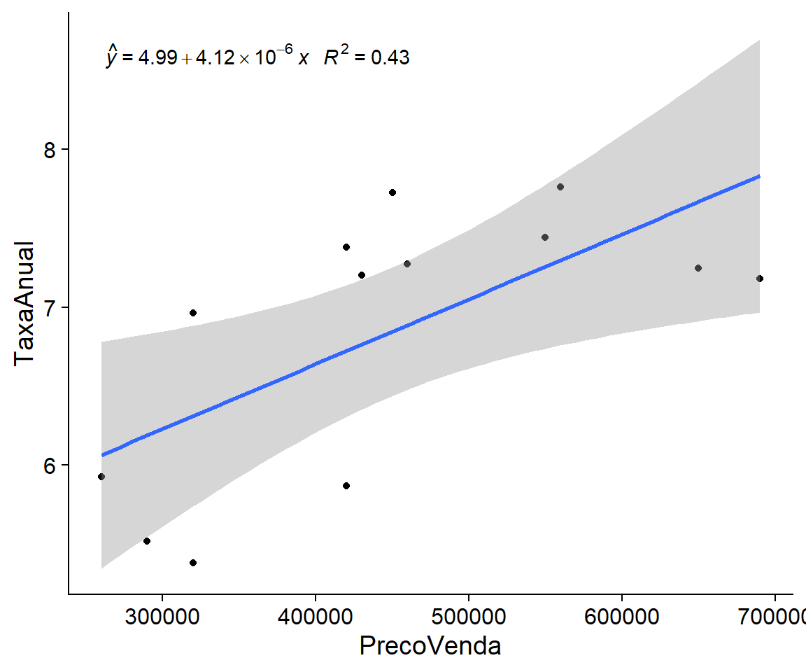
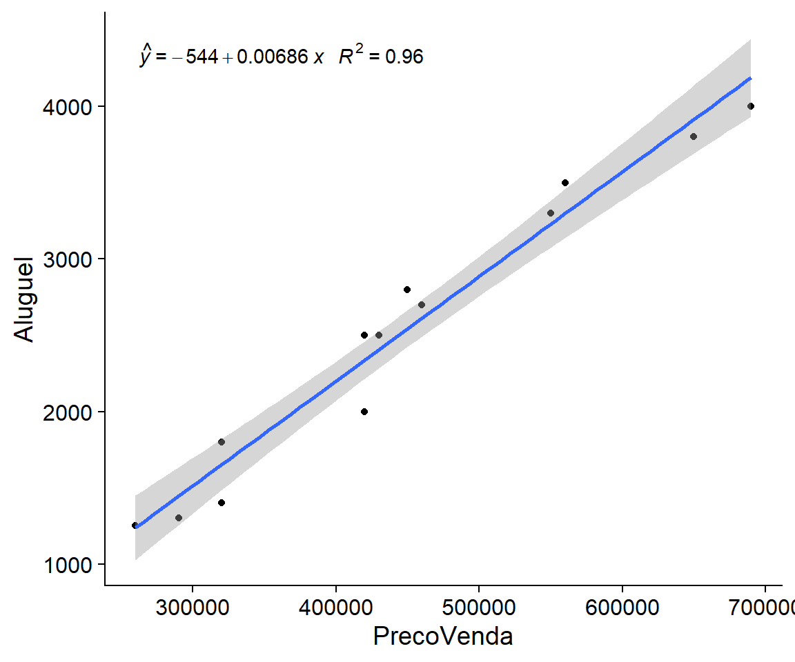
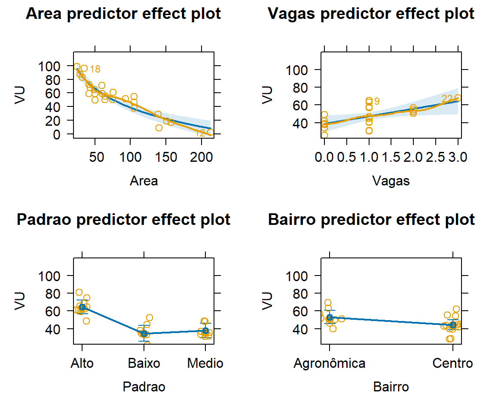

| Id | Compra | ITBI | Outros | Custo Total | Aluguel líq. | Rend. (%) | Venda |
|---|---|---|---|---|---|---|---|
| 1 | 290.603,2 | 8.718,10 | 2.906,03 | 302.227,3 | 1.418,16 | 5,78 | 338.173,6 |
| 2 | 302.754,7 | 9.082,64 | 3.027,55 | 314.864,8 | 1.264,63 | 4,93 | 327.228,0 |
| 3 | 287.465,6 | 8.623,97 | 2.874,66 | 298.964,2 | 1.170,97 | 4,80 | 360.624,5 |
| 4 | 323.929,2 | 9.717,88 | 3.239,29 | 336.886,4 | 876,51 | 3,17 | 386.662,5 |
| 5 | 304.942,6 | 9.148,28 | 3.049,43 | 317.140,3 | 1.139,93 | 4,40 | 364.454,6 |
| 6 | 287.693,0 | 8.630,79 | 2.876,93 | 299.200,7 | 1.343,56 | 5,52 | 358.200,6 |
| 7 | 307.311,4 | 9.219,34 | 3.073,11 | 319.603,9 | 1.735,84 | 6,72 | 380.667,8 |
| 8 | 311.074,9 | 9.332,25 | 3.110,75 | 323.517,9 | 1.284,29 | 4,87 | 381.652,4 |
| 9 | 308.636,7 | 9.259,10 | 3.086,37 | 320.982,2 | 1.431,65 | 5,49 | 383.878,3 |
| 10 | 295.419,2 | 8.862,58 | 2.954,19 | 307.235,9 | 1.234,70 | 4,93 | 365.336,3 |
| 11 | 322.676,7 | 9.680,30 | 3.226,77 | 335.583,8 | 904,56 | 3,28 | 387.172,5 |
| 12 | 305.847,7 | 9.175,43 | 3.058,48 | 318.081,5 | 1.163,40 | 4,48 | 334.155,0 |
4 Avaliação de Aluguéis
As avaliações de aluguéis geralmente são realizadas ora utilizando o método da remuneração do capital (que, como veremos, é nada mais do que o inverso do método da renda), ora utilizando o método comparativo direto.
Em essência, a diferença entre os dois métodos encontra-se na forma de olhar para os imóveis. No caso do método da remuneração do capital, analisa-se o imóvel como um bem de investimento. No caso do método comparativo, o imóvel é analisado como um bem de consumo.
4.1 O Método da Renda
O Método da Renda é muito aplicado na avaliação dos valores de venda de imóveis urbanos, especialmente aqueles destinados à implantação de empreendimentos como hotéis e outros empreendimentos de base imobiliária. O método da renda, quando aplicado inversamente, ou seja, quando aplicado para o cálculo do valor dos aluguéis a partir de valores de venda conhecidos, é também chamado de método da remuneração do capital. Tal método é um dos mais utilizados na avaliação de aluguéis. No entanto, apesar de ser intuitivo e de fácil aplicação, as dificuldades relacionadas ao estabelecimento apropriado da taxa de rentabilidade, e outras tantas que serão discutidas ao longo deste capítulo, tornam-no um método complexo e muitas vezes duvidoso.
O objetivo do Método da Remuneração do Capital (MRC) é a obtenção do valor do aluguel através da aplicação de uma taxa de rentabilidade ao valor de venda do imóvel, supostamente conhecido1. Se o valor de mercado do imóvel \(V_{venda}\) é conhecido, o valor do aluguel (\(V_{aluguel}\)) é estimado através da seguinte expressão, baseada numa taxa de rentabilidade \(i\):
\[V_{aluguel}=V_{venda}*i\]
A taxa de rentabilidade a ser aplicada ao imóvel depende de fatores físicos (tais como a tipologia do imóvel), econômicos (como a conjuntura econômica) e outros até subjetivos (como a taxa de risco a ser definida pelo avaliador, em comum acordo ou não com o seu contratante).
4.1.1 Taxa de rentabilidade
É usual que para a obtenção da taxa de rentabilidade total do imóvel esta seja decomposta em duas partes: taxa de rentabilidade do terreno (\(i_i\)) e taxa de rentabilidade das benfeitorias (\(i_b\)). Estas, por sua vez, também podem ser decompostas em outros componentes, como pode ser visto no quadro abaixo:
| Tipo | Terreno | Benfeitorias |
|---|---|---|
| Taxa básica | 6,0% | 6,0% |
| Não-liquidez | 1,5% | 1,5% |
| Valorização | -1,5% | - |
| Depreciação | - | 2,0% |
| Vacância | - | 1,0% |
| TOTAL | 6,0% | 10,5% |
Uma vez conhecida as taxas de remuneração do terreno e das benfeitorias, pode-se calcular a taxa de remuneração total do imóvel, a partir da seguinte expressão (D’Amato e Alonso 2019, 86):
\[i = \frac{V_t i_t + V_b i_b}{Vt + Vb}\]
Deve-se ter em mente sempre que a taxa global obtida com a expressão acima somente deve ser aplicada àquele imóvel em específico, já que a taxa global varia conforme a divisão do valor do imóvel entre terra e benfeitoria. Assim, pode ser mais fácil não calcular a taxa composta e aplicar diretamente a taxa correspondente a cada parte do capital.
4.1.1.1 Justificativas dos componentes da taxa de rentabilidade
Os compontentes da taxa de rentabilidade apresentados na tabela acima se justificam da seguinte maneira:
Taxa básica: esta taxa se justifica pela existência de outras aplicações no mercado financeiro que competem com o investimento em imóveis. Se, por exemplo, existem aplicações disponíveis no mercado financeiro que propiciem segurança e rentabilidade de longo prazo de 6,0% a.a., esta taxa deverá ser considerada como a taxa básica.
Não-liquidez: este componente se justifica devido à perda de liquidez que o investimento em imóveis acarreta para o investidor. Se, por exemplo, o investidor tem acesso a oportunidades de investimento que propiciem segurança e rentabilidade de longo prazo de 6% a.a., assim como uma alta liquidez, o investidor deve requerer uma compensação pela perda de liquidez que justifique a aplicação dos seus recursos no mercado imobiliário.
Valorização: este componente se justifica devido à expectativa de valorização que pode estar embutida no valor dos imóveis, em especial ao valor da terra. Em condições usuais (i.e. em que os custos reais de construção permaneçam praticamente estáveis), as benfeitorias tendem apenas a se depreciar, portanto não é usual a aplicação de uma taxa de valorização a este componente do valor dos imóveis.
Depreciação: a depreciação se aplica somente ao componente benfeitoria, sendo absurda a sua aplicação ao componente terra. Deve-se ter coerência na escolha da taxa de depreciação, levando em conta a tipologia do imóvel, assim como os materiais utilizados para sua construção e seu padrão de acabamento.
Vacância: diz respeito ao risco de vacância de um determinado investimento imobiliário. Por exemplo, se ao construir lojas com fins de locação se espera uma taxa de vacância destas lojas de 1,0% a.a., aplica-se este valor às benfeitorias apenas. Por que não aplicar a taxa de vacância ao imóvel como um todo? A explicação é que a terra estaria vaga de qualquer maneira sem os investimentos na construção das benfeitorias. Assim, a vacância é um risco que se aplica ao investimento na construção destas benfeitorias, mas não ao terreno, que não deixa de se valorizar e não perde valor com o tempo, mesmo quando está sem uso.
4.2 O Método da remuneração do capital
O método da remuneração do capital é o método utilizado para se obter o valor do aluguel a partir da aplicação de uma taxa de rentabilidade ao valor de venda do imóvel. Assim, o método da remuneração do capital é o inverso do método da renda, esse último mais conhecido, em que a partir do conhecimento da renda que pode ser obtida de um imóvel ao longo de um horizonte de tempo, essa renda é descontada a uma determinada taxa de rentabilidade para obtenção do valor presente ou valor de mercado do imóvel.
Existem dúvidas acerca de qual taxa de rentabilidade aplicar, como explicado na última seção. No entanto, estas não são as únicas fraquezas do método. Como vimos na seção (subsec-renda?), no preço dos imóveis pode estar embutido uma renda implícita decorrente de sua expectativa de valorização (quarta renda). Esta renda, na prática, não pode ser observada diretamente, o que dificulta a aplicação do método.
Como visto na seção (subsec-renda?), na hipótese do mercado imobiliário encontrar-se perfeitamente equilibrado, i.e. com os preços refletindo tão e somente os fundamentos econômicos, sem sobrepreços em relação ao valor esperado descontado do fluxo de rendimentos, o valor de um imóvel pode ser assim calculado (Malpezzi e Wachter 2002):
\[V_{Imovel} \approx \frac{\mathbb{E}[R_l]}{i}\]
Dessa forma, seria relativamente fácil descobrir o valor justo para o aluguel líquido do imóvel (\(R_l\)) baseado em uma taxa de rentabilidade \(i\) devidamente fundamentada aplicada ao valor de mercado do imóvel (\(V_{Imovel}\)).
No entanto, caso o mercado esteja sobrevalorizando os imóveis e a expectativa do mercado seja que esta sobrevalorização aumente com o tempo, como prevê Blanchard (1979), então o valor do imóvel no período \(t\) será:
\[V_t = V_t^*+b_t; \qquad \mathbb{E}[b_t] = (1+i)b_t\]
Nestas situações, portanto, o imóvel está produzindo uma renda implícita, ou seja, uma renda relacionada à expectativa de sua valorização. Isto explica porque um proprietário pode estar disposto a manter um imóvel sem uso (retenção especulativa (Lacerda e Abramo 2020)), ou seja, sem produzir qualquer tipo de renda explícita, por um determinado período de tempo, até que seja conveniente a sua alienação ou qualquer outra destinação que lhe seja apropriada.
Da mesma maneira, o proprietário de um imóvel pode vir a aceitar locar o seu imóvel a uma taxa de rentabilidade inferior (ou mesmo muito inferior) às taxas de rentabilidade dos outros investimentos disponíveis, haja vista ele está esperando uma rentabilidade também em relação ao aumento do valor de venda do imóvel2.
Nestas situações, o método comparativo de dados de mercado deve ser mais preciso na determinação dos aluguéis.
No entanto, sugere-se que o modelo de Blanchard (1979) pode ser levemente alterado para permitir a aproximação do valor do aluguel pelo método da remuneração do capital mesmo em situações em que o mercado esteja sobrevalorizando o valor dos imóveis. Imagine que o mercado esteja sobrevalorizando os imóveis em um determinado período \(t\) a uma determinada razão de \(b_t/100\) (\(b_t>100\)) e que haja expectativa de aumento contínuo desta sobrevalorização, conforme expressão abaixo:
\[V_t = b_tV_t^*; \qquad \mathbb{E}[b_t] = (1+i)b_t\]
Por exemplo, se a taxa de valorização real de longo prazo de 0,4% a.a. observada para os imóveis residenciais unifamiliares nos EUA (casas) puder ser considerada correta, partindo-se de uma conjuntura em que o mercado imobiliário esteja perfeitamente equilibrado (\(b_t = 1\)), considerando-se uma taxa de rentabilidade básica de 3% a.a., tería-se:
| Tipo | Terreno | Benfeitorias |
|---|---|---|
| Taxa básica | 3,0% | 3,0% |
| Vacância | - | 1,0% |
| Outras | -0,4% | -0,4% |
| TOTAL | 2,6% | 3,6% |
Considerando-se uma composição no valor final das casas de 50% para o valor do terreno e 50% para o valor das benfeitorias (válida para os bairros mais consolidados, onde a terra é relativamente mais cara), tem-se:
\[i = 0,5 i_t + 0,5 i_b = 0,5.2,6\% + 0,5.3,6\% = 3,1\%\, \text{a.a.}\]
Desta maneira, partindo-se de um imóvel com valor de venda hipotético de US$500.000,00, ter-se-ia que o valor justo para o seu aluguel seria:
\[Al = V_{Imovel}.i = 500.000\frac{3,1}{100} = 15.500\text{/ano} \approx 1.300 \text{/mês}\]
Deve-se reparar que o investidor desatento, ao se deparar com um imóvel locado ao valor de R$ 1.300,00 mensais, com valor de venda de R$ 500.000,00, poderá incorretamente entender que a rentabilidade do imóvel está abaixo do mercado. Pois esse investidor, ao desconsiderar o potencial de valorização do imóvel de 0,4% a.a., considerando apenas a taxa de vacância e a taxa básica, chegará a uma taxa de capitalização de 3,5% a.a. Assim, este investidor iria considerar que o valor real de venda do imóvel, calculado através do método da renda, deveria ser de:
\[V_{Imovel} = 12\frac{1300}{3,5\%} \approx 445.000,00 \]
Desta forma o investidor pode estar deixando de fazer um bom negócio por não ter enxergado que existe embutido no valor de venda de um imóvel uma quarta renda embutida, ou seja, a renda que deve ser advinda da expectativa de valorização do imóvel com o tempo.
4.3 Estratégias de investimento em imóveis
Os investidores que atuam no mercado imobiliário usualmente adotam diferentes estratégias de investimento. Assim como em outros mercados, como o mercado de ações, no mercado imobiliário existem investidores que adotam estratégias como a conhecida estratégia de buy & hold, i.e. comprar um imóvel e mantê-lo em carteira, com fins de auferir retorno em longo prazo, assim como investidores mais afoitos, atuando com o objetivo de obter retornos em curto e médio prazo, muitas vezes chamados de especuladores.
Nos mercados eficientes os especuladores podem ter um papel benéfico ao bom funcionamento dos mercados: comprando e vendendo ativos, os especuladores atuam no sentido de atenuar os ciclos de valorização/desvalorização, fornecendo maior estabilidade aos preços, assim como propiciando maior liquidez aos mercados. No mercado imobiliário, no entanto, diferentemente do que ocorre no mercado de ações, não é possível ao especulador manter uma posição vendida em ativos (short), o que é comum no mercado de ações, onde o investidor pode manter uma posição vendida por um grande período de tempo, ou seja, o investidor vende no mercado um ativo que ele não tem, e mantém essa posição enquanto ele entender que o ativo está sobrevalorizado. Uma vez que o ativo tive voltado ao seu valor de mercado, o investidor desfaz a operação, “recomprando” aquele ativo que ele não tinha, ficando líquido. Este tipo de operação nas bolsas de valores, teoricamente, ajuda a atenuar as sobrevalorizações de ativos que fatalmente ocorrem nos bull markets (conjuntura de mercado em que há grande expectativa de valorização e os preços da maioria dos ativos estão num ciclo de alta, alguns acima dos seus fundamentos). Como esta posição vendida não é possível nos mercados imobiliários, não há outros freios nestes mercados a serem aplicados durante os ciclos de alta que não sejam aqueles freios regulatórios, ou seja, os freios utilizados pelas entidades governamentais no sentido de esfriar os mercados, como elevação de taxas de juros, diminuição dos prazos de financiamento, etc.
Os investidores de longo prazo do mercado imobiliário, portanto, devem ter maior preocupação com a rentabilidade dos imóveis, ou seja, sua capacidade de gerar renda (aluguéis). Já os investidores de curto e médio prazo no mercado imobiliário podem estar menos preocupados com a renda efetiva realmente produzida pelos imóveis, ou seja, são investidores que procuram ganhar com as negociações dos imóveis (compra e venda) e não com a rentabilidade de aluguéis. Assim, para estes investidores, o aluguel pode ser apenas uma forma de evitar o pagamento de taxas durante o período em que eles mantém os imóveis em carteira. Em outra palavras, ao alugar os imóveis em carteira, os investidores de curto e médio prazo do mercado imobiliário estarão evitando custos de carregamento como o pagamento de taxas de condomínio, IPTU, etc., já que estas taxas, enquanto o imóvel está locado, correm por conta do locatário. Assim o investidor pode focar apenas nas suas operações de entrada (compra) e saída (venda) dos ativos.
Por exemplo, imagine que um investidor, ao se deparar com um mercado fraco para os imóveis, procure comprar apartamentos de um dormitório (studios) com expectativa de venda em alguns anos, quando o mercado imobiliário voltar a se aquecer. O investidor adquire algumas unidades ao preço médio de R$ 350.000,00, já inclusos neste valor o pagamento dos tributos (ITBI, custos cartoriais, etc). A taxa média de inflação da economia é de 3,75% a.a. (~0,30% a.m.) e os custos mensais para o locador para o carregamento do imóvel (o que inclui a sua manutenção, assim como o pagamento de taxas obrigatoriamente pagas pelo locador, como o fundo de reserva) seja em torno de R$ 350,00 (0,1% a.m.). Este investidor pode optar por alugar os seus imóveis em troca de um aluguel mínimo (líquido) de R$ 1.425,00 ao mês, que é suficiente tanto para cobrir as despesas obrigatórias do locador/investidor, assim como para efetuar a atualização monetária do seu capital. Desta forma o investidor irá auferir lucro caso o valor médio de venda dos seus imóveis, após certo período de tempo, for nominalmente superior ao preço médio de compra, de R$ 350.000,00. Em suma, não há necessidade de o investidor controlar os preços no tempo, pois a atualização monetária e o pagamento dos custos de carregamento já são feitos através do aluguel.
Este simples exemplo ilustra como podem ser enganosos os cálculos de rentabilidade feitos pelos investidores desatentos, como a comparação da rentabilidade da locação com as taxas de curto prazo dos títulos públicos, por exemplo. Enquanto os imóveis podem ser valorizar no tempo, os títulos públicos de curto prazo estão sujeitos ao efeito corrosivo da inflação. Outro benefício do investimento em imóveis é a questão tributária: enquanto nos títulos públicos haverá cobrança de imposto de renda sobre o valor integral de valorização dos títulos, pouco importando o efeito da inflação, nos imóveis o imposto de renda deverá ser aplicado apenas sobre o ganho de capital3
4.3.1 Exemplo
Verifica-se na tabela acima que alguns imóveis da carteira tem rendimento um pouco inferior e outros um rendimento um pouco superior à média. A taxa de rendimento efetiva total pode ser calculada através da razão entre a soma dos valores dos aluguéis líquidos e a soma dos valores totais despendidos pelo investidor na aquisição da unidade. Esta taxa, para o exemplo em questão, é de 4,84% a.a. Admitindo que esta rentabilidade seja suficiente para cobrir os custos de carregamento dos imóveis assim como atualizar monetariamente o capital investido, pode-se considerar qualquer excesso no preço de venda em relação ao custo total de aquisição como lucro.
Assim, o lucro total com a venda das unidades para o investidor pode ser calculado através da razão entre a soma dos valores de venda destas unidades e a soma dos valores desembolsados pelo investidor para a sua aquisição, o que resulta em um lucro de 573.917,20. A taxa de lucro real da operação, portanto, é a razão deste lucro pelo custo total de aquisição, 15,13%.
Deve-se salientar que o lucro assim calculado se refere ao lucro da estratégia como um todo e não ao lucro obtido isoladamente em cada unidade. Para calcular o lucro/prejuízo em cada unidade seria necessário conhecer outros dados, como o tempo decorrido entre a compra e a venda das unidades e o eventual lucro ou prejuízo que o carregamento de cada unidade causou, isoladamente4.
| Id | Custo Total | Aluguel líq. | Rend. (%) | Venda | Lucro | Lucro (%) |
|---|---|---|---|---|---|---|
| 1 | 302.227,3 | 1.418,16 | 5,78 | 338.173,6 | 35.946,30 | 11,89 |
| 2 | 314.864,8 | 1.264,63 | 4,93 | 327.228,0 | 12.363,17 | 3,93 |
| 3 | 298.964,2 | 1.170,97 | 4,80 | 360.624,5 | 61.660,33 | 20,62 |
| 4 | 336.886,4 | 876,51 | 3,17 | 386.662,5 | 49.776,08 | 14,78 |
| 5 | 317.140,3 | 1.139,93 | 4,40 | 364.454,6 | 47.314,32 | 14,92 |
| 6 | 299.200,7 | 1.343,56 | 5,52 | 358.200,6 | 58.999,93 | 19,72 |
| 7 | 319.603,9 | 1.735,84 | 6,72 | 380.667,8 | 61.063,86 | 19,11 |
| 8 | 323.517,9 | 1.284,29 | 4,87 | 381.652,4 | 58.134,56 | 17,97 |
| 9 | 320.982,2 | 1.431,65 | 5,49 | 383.878,3 | 62.896,10 | 19,59 |
| 10 | 307.235,9 | 1.234,70 | 4,93 | 365.336,3 | 58.100,41 | 18,91 |
| 11 | 335.583,8 | 904,56 | 3,28 | 387.172,5 | 51.588,71 | 15,37 |
| 12 | 318.081,5 | 1.163,40 | 4,48 | 334.155,0 | 16.073,43 | 5,05 |
Este exemplo é ilustrativo de quão enganoso pode ser a aplicação do método da renda: a princípio, unidades que geram alguéis com taxas de rentabilidade próximas à inflação seriam preteridas em relação aos outros investimentos disponíveis no mercado financeiro. No entanto, com a adoção de uma estratégia adequada, o investimento em imóveis mostrou-se capaz de proporcionar rentabilidades elevadas.
Caso o investidor viesse a procurar um avaliador para saber o valor de mercado dos imóveis antes de sua aquisição, baseado no valor dos aluguéis então vigentes, e o avaliador tivesse utilizado o método da renda, com uma taxa de capitalização de 6% a.a., o investidor provavelmente não teria comprado quaisquer dos imóveis, pois teria chegado à conclusão que todos os imóveis estariam sobrevalorizados, como mostra a tabela abaixo.
| Id | Aluguel líq. | Custo Total | Avaliação | Venda |
|---|---|---|---|---|
| 1 | 1.418,16 | 302.227,3 | 291.350,2 | 338.173,6 |
| 2 | 1.264,63 | 314.864,8 | 259.807,7 | 327.228,0 |
| 3 | 1.170,97 | 298.964,2 | 240.565,9 | 360.624,5 |
| 4 | 876,51 | 336.886,4 | 180.071,5 | 386.662,5 |
| 5 | 1.139,93 | 317.140,3 | 234.188,9 | 364.454,6 |
| 6 | 1.343,56 | 299.200,7 | 276.023,0 | 358.200,6 |
| 7 | 1.735,84 | 319.603,9 | 356.614,6 | 380.667,8 |
| 8 | 1.284,29 | 323.517,9 | 263.846,5 | 381.652,4 |
| 9 | 1.431,65 | 320.982,2 | 294.121,0 | 383.878,3 |
| 10 | 1.234,70 | 307.235,9 | 253.659,5 | 365.336,3 |
| 11 | 904,56 | 335.583,8 | 185.834,8 | 387.172,5 |
| 12 | 1.163,40 | 318.081,5 | 239.011,0 | 334.155,0 |
No entanto, caso o avaliador, em comum acordo com o investidor, tivesse estabelecido uma expectativa de valorização a uma taxa de 1,5% a.a., o avaliador teria chegado aos seguintes valores de mercado para os imóveis:
| Id | Aluguel líq. | Custo Total | Avaliação | Venda |
|---|---|---|---|---|
| 1 | 1.418,16 | 302.227,3 | 385.914,3 | 338.173,6 |
| 2 | 1.264,63 | 314.864,8 | 344.134,1 | 327.228,0 |
| 3 | 1.170,97 | 298.964,2 | 318.647,0 | 360.624,5 |
| 4 | 876,51 | 336.886,4 | 238.517,8 | 386.662,5 |
| 5 | 1.139,93 | 317.140,3 | 310.200,2 | 364.454,6 |
| 6 | 1.343,56 | 299.200,7 | 365.612,3 | 358.200,6 |
| 7 | 1.735,84 | 319.603,9 | 472.361,8 | 380.667,8 |
| 8 | 1.284,29 | 323.517,9 | 349.483,8 | 381.652,4 |
| 9 | 1.431,65 | 320.982,2 | 389.584,6 | 383.878,3 |
| 10 | 1.234,70 | 307.235,9 | 335.990,3 | 365.336,3 |
| 11 | 904,56 | 335.583,8 | 246.151,6 | 387.172,5 |
| 12 | 1.163,40 | 318.081,5 | 316.587,4 | 334.155,0 |
Desta forma, baseado nas avaliações fornecidas, o investidor deixaria de comprar apenas as unidades 4, 5, 11 e 12 (talvez ele decidisse comprar a 5 e a 12, por estas terem apresentados valores de mercado apenas um pouco superior ao custo de aquisição).
Assim, o seu resultado geral seria um rendimento de 5,38% a.a. com os aluguéis, superior ao custo de reposição da inflação e outros custos de carregamento, e teria auferido um lucro total de 409.164,66 com a venda das unidades. Apesar do menor lucro com a venda das unidades, esse lucro se dá sobre um capital investido menor, gerando portanto maior rentabilidade geral, no caso igual a 16,45%.
4.3.2 Conclusão
O método da renda (ou remuneração do capital) é um método muito interessante para ajudar na compreensão de como se formam os valores dos imóveis e dos aluguéis. Se por um lado o valor do imóvel é gerado pela sua capacidade de gerar renda (D’Amato e Alonso 2019, 113), por outro lado uma parte do total da renda gerada pelo imóvel está implícita (quarta renda), o que dificulta a aplicação do método, seja para formação de valores de venda a partir dos valores dos alugueis ou vice-versa.
4.4 Método da Renda e Método Evolutivo
A aplicação do método da renda muitas vezes deve ser feita em conjunto com o método evolutivo. Basicamente, o método evolutivo consiste em formar o valor do imóvel através da soma dos seus componentes (terra e benfeitorias), majorada ou não de um fator de comercialização (ou vantagem da coisa feita), a ser aplicado fins de compensar o proprietário do imóvel pelo fato de ter ali aplicado uma soma de dinheiro que deixou de rentabilizar durante o período de construção do mesmo. Assim, quanto maior for o valor dos investimentos nas benfeitorias, maior tende a ser o fator de comercialização. Como os componentes dos imóveis (terra e benfeitorias), no entanto, possuem comportamento diferente em relação à valorização no tempo (as benfeitorias tendem a se depreciar com o tempo, enquanto a terra urbana, em geral, tende a se tornar mais cara com o crescimento das cidades), é ideal que sejam aplicadas taxas diferentes de rentabilidade a esses dois componentes.
Além da necessidade de aplicação de taxas separadas aos componentes terra e benfeitorias, outros problemas surgem quando da aplicação do método da renda aos imóveis heterogêneos, como os imóveis comerciais, por exemplo. É sabido que a capacidade de gerar renda das lojas, unidades comerciais em geral situadas no pavimento térreo é maior do que a capacidade de gerar renda dos andares superiores, onde se localizam, em geral, as salas comerciais e/ou andares corporativos. Assim, a composição de terreno e benfeitoria de cada unidade vai ser diferentes, tanto por conta das benfeitorias serem de tamanhos e possivelmente também de padrões e idade aparente diferentes, assim como porque a participação da terra em cada unidade vai ser diferente conforme o tamanho e o valor da benfeitoria. Por exemplo, seja um prédio de três andares (térreo mais dois), em que o térreo é composto por lojas comerciais de frente para uma rua movimentada enquanto os andares superiores são salas comerciais exploradas como locação para proofissionais liberais para instalação de escritórios. Não seria justo dizer que a cada andar da edificação cabe um terço do valor do terreno. Claramente deve-se estabelecer um peso maior para o andar térreo do que para os andares superiores, que tendem a produzir menor renda se comparado às lojas daquele pavimento.
Em geral, são pré-estabelecidos pesos a cada andar e, a partir desses pesos são calculadas áreas homogeneizadas e assim divididos a cota-parte de cada pavimento.
4.4.1 Exemplo
Seja o problema de calcular o valor dos aluguéis de cada pavimento de um edifício novo de 3 andares (térreo + 2), com área construída de 500 \(m^2\) cada um, num terreno de 1000 \(m^2\) de área.
Imagine que pesquisa de mercado recém realizada tenha fornecido para os terrenos naquele local o valor de R$1.000,00 por metro quadrado e os custos de construção para reprodução das benfeitorias seja de R$2.000,00 por metro quadrado.
Imagine ainda que a Taxa de Ocupação dos terrenos no local, estabelecida pela prefeitura seja igual a 0,5 e o Coeficiente de Aproveitamento Básico do terreno seja igual a 1,5, ou seja, que o plano diretor permita que naquele local se construa uma vez e meia a área do terreno, exatamente como as construções existentes se apresentam.
Aplique taxa de rentabilidade de 8% a.a para o valor do capital terreno e 12% a.a. para o valor das benfeitorias. Considere que no local o peso do térreo em relação aos outros pavimentos seja estimado em 3:1. Considere um fator de comercialização igual a 1,10.
Solução:
Como as construções existentes são exatamente as mesmas permitidas pela legislação, não há que se falar em sub ou superaproveitamento do terreno.
O valor do capital terreno total é de \(R\$1.000,00/m^2\times1.000m^2 = R\$ 1.000.000,00\)
Para o cálculo do valor do aluguel do térreo, deve-se considerar 3/5 deste valor (3 vezes o térreo mais 2 superiores), ou seja, o Capital Terreno do térreo é igual a R$ 600.000,00.
Já o valor do Capital Benfeitoria total do edifício é igual a \(R\$2.000,00/m^2\times1.500m^2 = R\$3.000.000,00\). Assim, o Capital Benfeitoria do térreo e de cada um dos dois pavimentos superiores são idênticos e de valor igual a R$1.000.000,00.
Dessa forma, para o cálculo do aluguel do térreo tem-se:
\[Al_{Térreo}=1,10\frac{(600.000,00\times 0,08 + 1.000.000,00 \times 0,12)}{12}= 15.400\]
Ou seja, o valor do aluguel do térreo, baseado nas premissas adotadas, é de R$15.400,00/mês (R$14.685/mês se considerada a capitalização mensal).
Já para um andar superior, o valor locatício será de:
\[Al_{Térreo}=1,10\frac{(200.000,00\times 0,08 + 1.000.000,00 \times 0,12)}{12} \approx 12.450\]
Ou seja, o valor do aluguel de um andar superior, baseado nas premissas adotadas, é de R$ 12.450,00/mês (R$11.850/mês se considerada a capitalização mensal).
4.5 Coeficiente de Aproveitamento
Outro fato importante na avaliação de aluguéis através do método evolutivo está na necessidade da consideração do real aproveitamento do terreno por parte do proprietário. A explicação é que na aplicação do método involutivo é necessário avaliar o terreno para a composição do preço final do imóvel, para enfim aplicar a taxa de rentabilidade. No entanto, pode ser que o edifício construído esteja aproveitando o terreno de maneira superior (superaproveitamento) ou inferior (subaproveitamento) ao potencial do terreno. Assim, para o cálculo do aluguel justo, deve ser primeiramente aplicado um fator ao valor do terreno que leva em consideração este super ou subaproveitamento, calculando assim o capital terreno que está efetivamente disponibilizado ao locatário, em cima do qual deverá incidir a taxa de rendimento.
4.5.1 Coeficiente de aproveitamento clássico
Basicamente, o cálculo do coeficiente de aproveitamento do terreno pode ser feito através da simples equação abaixo, que define o Coeficiente de Aproveitamento do terreno como a razão entre a área homogeneizada existente (ou realmente edificada) e a área homogeneizada possível (hipotética, de acordo com os regramentos de uso do solo local):
\[CA = \frac{A_{hexistente}}{A_{hpossivel}}\]
4.5.1.1 Exemplo
Um terreno com 2.304 \(m^2\), situado numa região com TO = 0,5 e CA = 2, efetivamente ocupado por uma construção térrea com 700 \(m^2\) de área construída. Considerando o preço unitário do terreno, avaliado em R$ 887,65/\(m^2\), e o custo de reedição das benfeitorias, estimado em R$ 550.000,00, qual o valor do aluguel do imóvel? Considerar o fator de comercialização igual a 1,10 e as taxas de rentabilidade para o terreno e as benfeitorias de 8% e 12% a.a., respectivamente. Relação de pesos entre térreo, primeiro andar e superiores: 3:2:1.
Solução:
- Cálculo do valor do terreno
\(V_t = 2.304\times 887,65 = 2.045.158,45\)
- Cálculo do Coeficiente de Aproveitamento
\(CA = \frac{A_{hexistente}}{A_{hpossivel}}=\frac{3\times 700}{(3 + 2 + 1 + 1) \times 2.304*0,5}=\frac{2.100}{8.064}=0,26\)
- Valor do Capital Terreno disponível ao locatário
\(C_t = CA\times V_t = 0,26 \times 2.045.158,45=531.741,20\)
- Valor do Capital Imóvel disponível ao locatário
\(C_I = FC\times (C_t + C_b) = 1,10 \times (531.741,20 + 550.000,00) \approx 1.134.915,00\)
- Cálculo da taxa ponderada a ser aplicada ao Capital Imóvel
\(i = \frac{i_tV_t + i_bV_b}{V_t + V_b}=\frac{0,0064 \times 531.741,20 + 0,0095 \times 550.000,00}{1.031.741}=0,836\%\)
- Cálculo do valor do aluguel
\(Al_I = C_I \times i = 1.134.915,00 \times 0,00836 \approx 9.500 R\$/\text{mês}\)
4.5.2 Efeitos da idade e do padrão de construção existente sobre o aproveitamento efetivo do terreno
Alguns autores defendem que seja considerado no aproveitamento do terreno não apenas os valores de área construída mas também os aspectos qualitativos desta área construída, tais como padrão de acabamento e depreciação.
Existem algumas tentativas de se estabelecer uma fórmula para cálculo do coeficiente de aproveitamento (CA) em função dos diversos parâmetros. No entanto, alguns testes realizados pelo autor deste texto parecem mostrar que as fórmulas atualmente em estudo levam a resultados incoerentes. Dessa forma, toma-se a liberdade aqui de propor que as considerações sobre os aspectos qualitativos das benfeitorias sejam feitas já no cálculo das áreas homogeneizadas existentes e possíveis.
4.5.2.1 Exemplo 1
Tome-se o mesmo exemplo anterior, porém considerando que as construções existentes tem idade de 22 anos, com 60 anos de vida útil, estando este edifício situado em bairro composto, em sua grande maioria, de edificações novas. Assuma que o padrão da edificação existente em estudo seja coerente com o padrão das outras edificações no entorno.
Solução
- Cálculo do CA
\(A_{hexistente} = 3 \times A_b \times \left ( 0,2 + 0,8\frac{60-22}{60} \right) = 3 \times 700 \times 0,7067 \approx 1.484\)
\(A_{hpossivel} = (3+2+1+1) \times 0,5\times 2.304 \times \left ( 0,2 + 0,8\frac{60-0}{60} \right) = 8.064\)
\(CA = \frac{1.484}{8.064}=0,184\)
- Valor do Capital Terreno disponível ao locatário
\(C_t = CA\times V_t = 0,184 \times 2.045.158,45=376.383,70\)
- Valor do Capital Imóvel disponível ao locatário
\(C_I = FC\times (C_t + C_b) = 1,10 \times (376.383,70 + 550.000,00) \approx 1.019.022,00\)
- Cálculo da taxa ponderada a ser aplicada ao Capital Imóvel
\(i = \frac{i_tV_t + i_bV_b}{V_t + V_b}=\frac{0,0064 \times 376.383,70 + 0,0095 \times 550.000,00}{926.383,70}=0,824\%\)
- Cálculo do valor do aluguel
\(Al_I = C_I \times i = 1.019.022,00 \times 0,00824\approx 8.400 R\$/\text{mês}\)
4.5.2.2 Exemplo 2
No mesmo exemplo anterior, considere agora que o edifício mais antigo tinha padrão de acabamento inferior ao padrão de acabamento dos imóveis do entorno. Considere os índices de 1,47 e 1,926 para representar os respectivos padrões.
- Cálculo do CA
\(A_{hexistente} = 3 \times A_b \times \left ( 0,2 + 0,8\frac{60-22}{60} \right) \times 1,47 = 3 \times 700 \times 0,7067 \times 1,47 \approx 2.181,50\)
\(A_{hpossivel} = (3+2+1+1) \times 0,5\times 2.304 \times \left ( 0,2 + 0,8\frac{60-0}{60} \right) \times 1,926 = 15.531,26\)
\(CA = \frac{2.181,50}{15.531,26}=0,14\)
- Valor do Capital Terreno disponível ao locatário
\(C_t = CA\times V_t = 0,14 \times 2.045.158,45=287.260,20\)
- Valor do Capital Imóvel disponível ao locatário
\(C_I = FC\times (C_t + C_b) = 1,10 \times (287.260,20 + 550.000,00) \approx 920.986,20\)
- Cálculo da taxa ponderada a ser aplicada ao Capital Imóvel
\(i = \frac{i_tV_t + i_bV_b}{V_t + V_b}=\frac{0,0064 \times 287.260,20 + 0,0095 \times 550.000,00}{837.260,20}=0,844\%\)
- Cálculo do valor do aluguel
\(Al_I = C_I \times i = 920.986,20 \times 0,00844\approx 7.770 R\$/\text{mês}\)
4.5.3 Cálculo do valor locatício de unidades autônomas
Os procedimentos acima apresentados são relevantes para aplicação ao cálculo de aluguéis de prédios completos. Existem situações práticas, no entanto, em que se requer a avaliação de uma unidade autônoma apenas e não se conhecem os dados de áreas do terreno ou área construída das outras unidades.
Nestes casos, pode-se prosseguir com o cálculo do valor do Capital Terreno da unidade a partir da seguinte expressão:
\[CT_{un} = q_t \frac{A_{hu}}{TO\times p + (CA_{basico}-TO)*1}\]
4.5.3.1 Exemplo
Calcule o valor locatício de uma unidade de 250 \(m^2\) no térreo em um edifício em que não se conhece o valor da área do terreno, tampouco a área construída das outras unidades. Considerar TO = 0,5 e \(CA_{basico} = 1,5\).
Imagine que pesquisa de mercado recém realizada tenha fornecido para os terrenos naquele local o valor de R$1.000,00 por metro quadrado e os custos de construção para reprodução das benfeitorias seja de R$2.000,00 por metro quadrado.
Aplique taxa de rentabilidade de 8% a.a para o valor do capital terreno e 12% a.a. para o valor das benfeitorias. Considere que no local o peso do térreo em relação aos outros pavimentos seja estimado em 3:1. Considere um fator de comercialização igual a 1,10.
Solução
- Cálculo do Capital Terreno da unidade autônoma
\[CT_{un} = 1.000 \frac{3 \times 250}{0,5\times 3 + (1,5-0,5)*1}=1.000\frac{750}{2,5}=300.000\]
- Cálculo do valor do Capital Benfeitoria
\(C_b = 250 \times 2.000 = 500.000,00\)
- Valor do Capital Imóvel disponível ao locatário
\(C_I = FC\times (C_t + C_b) = 1,10 \times (300.000,00 + 500.000,00) \approx 880.000,00\)
- Cálculo da taxa ponderada a ser aplicada ao Capital Imóvel
\(i = \frac{i_tV_t + i_bV_b}{V_t + V_b}=\frac{0,0064 \times 300.000,00 + 0,0095 \times 500.000,00}{800.000,00}=0,834\%\)
- Cálculo do valor do aluguel
\(Al_I = C_I \times i = 880.000,00 \times 0,00834\approx 7.340,00 R\$/\text{mês}\)
4.6 O Método Comparativo
O Método Comparativo Direto de Dados de Mercado (MCDDM) é um método de aplicação recomendável para avaliação tanto de aluguéis como de valores de venda, quando a tipologia e o mercado a que o imóvel pertence possibilitar a aplicação do método.
Como os imóveis são bens heterogêneos, em geral, sua comparação é injusta. No entanto, algumas tipologias, como apartamentos, quando localizados em grandes centros urbanos, onde estes são fabricados praticamente em série, possibilitam a aplicação do método, desde que os seus valores possam ser ajustados de maneira a possibilitar essa comparação, como no caso da aplicação do tratamento por fatores, onde fatores de homogeneização são aplicados a esses bens heterogêneos com fins de permitir a comparação de seus valores. Outro tratamento ainda mais interessante é o chamado tratamento científico, ou seja, o tratamento das características dos imóveis por métodos estatísticos que permitam explicar como se dá no mercado a formação dos preços dos aluguéis ou valores de venda.
Como este método prescinde da definição prévia de taxas de rentabilidade ou expectativa de valorização, ele deve ser preferido sempre que aplicação seja possibilitada pela existência de um número razoável de dados de mercado.
4.7 Método da Renda vs. Método Comparativo
O exemplo abaixo, extraído de D’Amato e Alonso (2019, 94), ilustra como pode ser problemática a aplicação do método da renda ou remuneração do capital.
Table: Exemplo 1: Método da Renda vs. Método Comparativo.
Id| Venda (R$)| Aluguel
(R$/mês)| Taxa (% a.m.)| Taxa (% a.a.)| |–:|———–:|—————-:|————-:|————-:| | 1| 420.000| 2.000| 0,48| 5,87| | 2| 450.000| 2.800| 0,62| 7,73| | 3| 320.000| 1.400| 0,44| 5,38| | 4| 260.000| 1.250| 0,48| 5,92| | 5| 460.000| 2.700| 0,59| 7,28| | 6| 690.000| 4.000| 0,58| 7,18| | 7| 650.000| 3.800| 0,58| 7,25| | 8| 380.000| 1.240| 0,33| 3,99| | 9| 550.000| 3.300| 0,60| 7,44| | 10| 560.000| 3.500| 0,62| 7,76| | 11| 420.000| 2.500| 0,60| 7,38| | 12| 320.000| 1.800| 0,56| 6,96| | 13| 430.000| 2.500| 0,58| 7,20| | 14| 290.000| 1.300| 0,45| 5,51|
A pesquisa de mercado foi realizada com intuito de fundamentar a taxa de rendimento a ser aplicada no método da renda.
Neste exemplo D’Amato e Alonso (2019) apenas ilustravam como seria a pesquisa e o cálculo da taxa de rentabilidade e não chegaram a demonstrar a aplicação do método para a avaliação de qualquer unidade. É simples fazê-lo, contudo. Imagine-se que a unidade em análise seja uma unidade com valor de venda igual a R$ 425.000,00.
A taxa de rentabilidade média anual calculada pela amostra é de 6,63 % a.a., com desvio-padrão de 1,11. Pode-se construir um intervalo de confiança para a média com confiança de 80% utilizando-se, simplificadamente, a distribuição normal (ver matloff2017?; matloff2009?), através da equação:
\[IC = 6,63 \pm \frac{\mathcal{N}_{90} \times \hat \sigma}{\sqrt{n}} = 6,63 \pm \frac{1,28 \times 1,11}{\sqrt{14}} = 6,63 \pm 0,38\]
O valor do aluguel para o apartamento com valor de venda igual a R$425.000,00 é, aproximadamente, R$ 2.350,00 [2.215,00; 2.480,00].
Acredita-se que esta seja uma aplicação válida do método da renda, pois o valor de venda da unidade em pauta tem valor próximo ao valor da média amostral, de R$ 442.857,14. No entanto, se o propósito fosse o de avaliar outros imóveis, com diferentes preços de venda, a partir dessa mesma taxa, o resultado final não seria adequado, como será visto.
Pois com o método da renda o valor estimado para o aluguel para um imóvel com valor de venda de R$ 275.000,00 seria de, aproximadamente, R$ 1.520,00 [1.430; 1600,00]. Já o valor do aluguel estimado com o método da renda para um imóvel com valor de venda igual a R$ 575.000,00 seria de R$ 3.175 [3.000,00; 3.350,00]. Em suma, o método da renda implica que imóveis com os mais diversos valores de venda apresentarão a mesma rentabilidade.
No entanto, esta hipótese (de que a rentabilidade é constante para quaisquer valores de venda) deveria ser testada. Em termos estritamente formais, deveria ser testada a hipótese de que não há regressão entre a taxa de rentabilidade e os valores de venda.

A Figura @ref(fig:RegressaoRenda) mostra que esta não é uma hipótese válida para este caso: claramente existe uma regressão entre os valores de aluguel e os valores de venda, i.e. a taxa de rentabilidade varia em função do preço de venda dos imóveis5.
Outra maneira mais simples de tratar os dados via método comparativo seria através da modelagem direta dos preços dos aluguéis em função dos preços de venda, como ilustrado na Figura @ref(fig:Comparativo).

O valor do aluguel calculado com este último modelo para os imóveis com valores de venda iguais a R$ 275.000,00; R$ 425.000,00 e R$ 575.000,00; assim como os valores previamente ajustados para estes mesmos imóveis com o método da renda podem ser vistos na Tabela @ref(tab:comparacao).
| Preço de Venda (R$) | Aluguel (R$) | Taxa (% a.a.) |
|---|---|---|
| Método da Renda | ||
| 275.000 | 1.520 | 6,63 |
| 425.000 | 2.350 | 6,63 |
| 575.000 | 3.175 | 6,63 |
| Método Comparativo | ||
| 275.000 | 1.340 | 5,85 |
| 425.000 | 2.370 | 6,70 |
| 575.000 | 3.400 | 7,10 |
O que se percebe claramente pela análise da tabela acima é que o Método da Renda claramente seria adequado para calcular o aluguel estimado apenas para o imóvel com valor de venda igual a R$ 425.000,00, enquanto majora injustamente o valor do aluguel do imóvel com valor de venda abaixo da média amostral (R$ 275.000,00) e minora também injustamente o valor do aluguel do imóvel com valor de venda cima da média amostra (R$ 575.000,00).
4.8 Exemplo
A melhor alternativa, então, ao método da renda ou remuneração do capital, é o Método Comparativo Direto de Dados de Mercado (MCDDM). Para aplicação deste método, contudo, não é necessário conhecer os valores de venda das unidades, como no exemplo anterior. Uma pesquisa de mercado deve ser feita na busca de encontrar as variáveis relevantes para explicar a formação de preço dos aluguéis apenas. A abundância de dados de anúncios de imóveis para alugar, em alguns mercados, facilita bastante a vida do avaliador. É o caso dos apartamentos em grandes centros urbanos. A tabela abaixo mostra os dados coletados pelo autor visando efetuar avaliação do valor do aluguel de apartamentos de um quarto (tipo Studio) e dois quartos na região da Agronômica. Deve-se notar que, no caso dos apartamentos, usualmente é relevante aos locatários o conhecimento prévio dos outros custos que terão decorrentes da locação do imóvel, tais como IPTU e condomínio. Neste caso, portanto, a variável dependente não será o valor do aluguel a ser cobrado pelo proprietário, mas o valor total das despesas do locatário. Assim, após o ajuste do modelo, para obtenção do valor do aluguel a constar do contrato, deverá ser retirado dos valores ajustados o valor das taxas condominiais e do IPTU.
| Id | Padrao | Area | Quartos | Vagas | Aluguel | Condo | IPTU | Total | Bairro |
|---|---|---|---|---|---|---|---|---|---|
| 1 | Baixo | 50,08 | 1 | 1 | 950 | 700,00 | 78,00 | 1.728,00 | Centro |
| 2 | Alto | 105,00 | 2 | 2 | 5.500 | 600,00 | 172,00 | 6.272,00 | Centro |
| 3 | Medio | 105,00 | 1 | 1 | 2.500 | 900,00 | 117,00 | 3.517,00 | Centro |
| 4 | Alto | 75,21 | 2 | 1 | 3.950 | 676,00 | 158,00 | 4.784,00 | Centro |
| 5 | Medio | 256,64 | 4 | 1 | 3.200 | 1.200,00 | 574,00 | 4.974,00 | Centro |
| 6 | Alto | 140,00 | 3 | 1 | 300 | 2.320,00 | 504,00 | 3.124,00 | Centro |
| 7 | Medio | 60,00 | 2 | 1 | 2.850 | 508,00 | 66,00 | 3.424,00 | Centro |
| 8 | Medio | 50,08 | 1 | 1 | 1.600 | 677,00 | 78,00 | 2.355,00 | Centro |
| 9 | Baixo | 105,42 | 3 | 1 | 2.900 | 885,00 | 223,55 | 4.008,55 | Centro |
| 10 | Baixo | 49,74 | 1 | 0 | 1.300 | 550,00 | 195,00 | 2.045,00 | Centro |
| 11 | Baixo | 31,91 | 1 | 2 | 1.800 | 450,90 | 160,00 | 2.410,90 | Centro |
| 12 | Alto | 213,00 | 4 | 2 | 3.200 | 1.568,34 | 539,60 | 5.307,94 | Centro |
| 13 | Baixo | 42,00 | 1 | 0 | 1.550 | 461,00 | 45,21 | 2.056,21 | Centro |
| 14 | Baixo | 75,30 | 3 | 0 | 2.100 | 510,00 | 56,18 | 2.666,18 | Centro |
| 15 | Baixo | 24,61 | 1 | 0 | 1.600 | 102,98 | 108,08 | 1.811,06 | Centro |
| 16 | Alto | 28,93 | 1 | 1 | 2.500 | 281,22 | 115,75 | 2.896,97 | Centro |
| 17 | Medio | 43,49 | 1 | 0 | 1.550 | 359,75 | 99,57 | 2.009,32 | Centro |
| 18 | Alto | 34,96 | 1 | 1 | 3.600 | 497,11 | 96,59 | 4.193,70 | Agronômica |
| 19 | Medio | 60,38 | 2 | 1 | 2.400 | 708,16 | 131,85 | 3.240,01 | Agronômica |
| 20 | Alto | 157,00 | 4 | 2 | 5.500 | 1.440,86 | 538,15 | 7.479,01 | Agronômica |
| 21 | Alto | 151,00 | 4 | 2 | 6.000 | 1.420,00 | 60,00 | 7.480,00 | Agronômica |
| 22 | Alto | 139,00 | 3 | 3 | 8.000 | 1.050,00 | 465,00 | 9.515,00 | Agronômica |
| 23 | Alto | 93,00 | 2 | 1 | 4.900 | 743,00 | 1.232,00 | 6.875,00 | Agronômica |
| 24 | Baixo | 42,00 | 1 | 0 | 1.500 | 309,00 | 60,00 | 1.869,00 | Agronômica |
| 25 | Medio | 65,00 | 2 | 1 | 2.500 | 600,00 | 117,00 | 3.217,00 | Agronômica |
| 26 | Medio | 64,00 | 2 | 1 | 2.000 | 766,00 | 136,00 | 2.902,00 | Agronômica |
O modelo que melhor se ajustou aos dados pode ser visto na Figura @ref(fig:ExComparativo). Deve-se notar que o modelo ajustou-se bem a estes dados. Algumas variáveis que se pensava relevantes mostraram apresentar pouca significância estatística, como a variável Dormitórios.

De posse do modelo assim ajustado, procedeu-se a avaliação de três unidades:
- Um Studio com 35,4 \(m^2\), 1 vaga de garagem e padrão alto no bairro Agronômica.
- Um apartamento de 2 quartos, com 65,66 \(m^2\) de área, com 1 vaga de garagem e padrão alto no bairro da Agronômica
- Um apartamento de 2 quartos, com 71,64 \(m^2\) de área, com 1 vaga de garagem e padrão alto no bairro da Agronômica
O valor ajustado pelo modelo, o valor das taxas condominiais e IPTU previstos, assim como o valor do aluguel a constar em contrato podem ser vistos na Tabela abaixo:
| Id | Area | Quartos | Vagas | Padrao | VAjustado | Condominio | IPTU | Aluguel |
|---|---|---|---|---|---|---|---|---|
| 1 | 35,40 | 1 | 1 | Alto | 3.650,38 | 150 | 70 | 3.430,38 |
| 2 | 65,66 | 2 | 1 | Alto | 5.125,77 | 200 | 100 | 4.825,77 |
| 3 | 71,64 | 2 | 1 | Alto | 5.339,37 | 215 | 110 | 5.014,37 |
Essa é uma das primeiras dificuldades relacionadas ao método da remuneração do capital: é necessário, primeiramente, conhecer o valor de mercado de venda do imóvel, para só então ser possível calcular o valor de seu aluguel.↩︎
Por exemplo, o proprietário de um apartamento pode locar o seu apartamento por um valor muito baixo, em troca do locatário se responsabilizar pelo pagamento das taxas do imóvel (condomínio, IPTU, e outras), enquanto aguarda o momento certo para sua alienação.↩︎
Também há cobrança de IR sobre os aluguéis recebidos. Assim, para que a estratégia funcione, o investidor deverá exigir um aluguel que cubra os custos e a atualização monetária já líquido de impostos.↩︎
É fácil perceber que enquanto algumas unidades tiveram rentabilidade bem acima do esperado, como as unidade 1 e 7, outras unidades tiveram rentabilidade bem abaixo do esperado, como as unidades 4 e 11. Assim, para o cálculo do lucro real exato de cada unidade em separado, dever-se-ia levar em conta o lucro/prejuízo operacional que o carregamento destas unidades no tempo causou.↩︎
Formalmente, dever-se-ia demonstrar que o teste F rejeitou a hipótese nula de que não há regressão entre a taxa de rendimento e os valores de venda. Este teste foi realizado pelo autor, porém não foi incluído no texto.↩︎